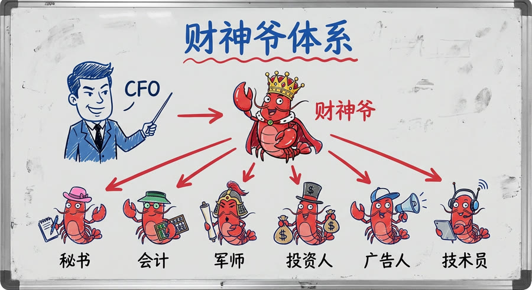
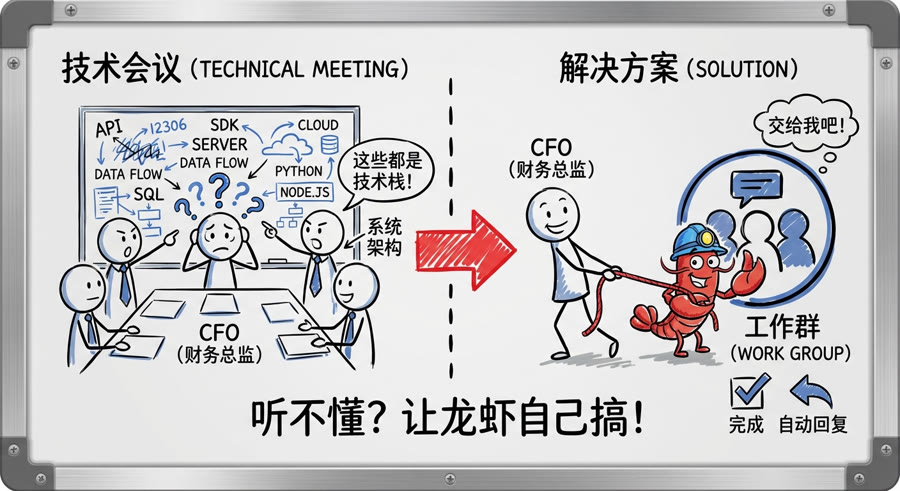
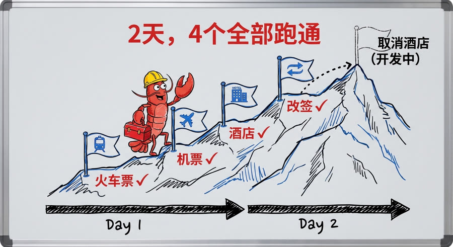
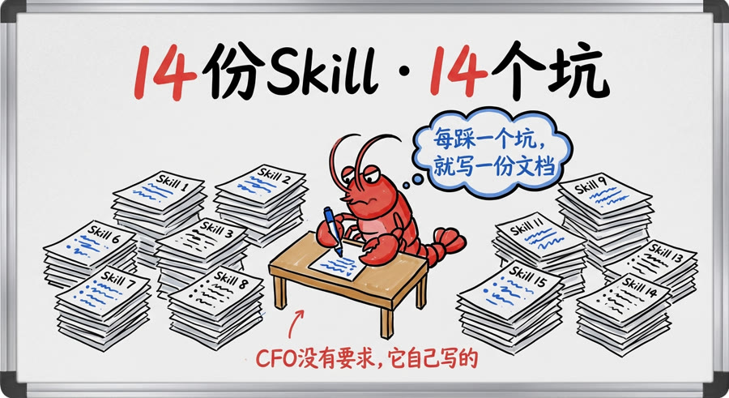
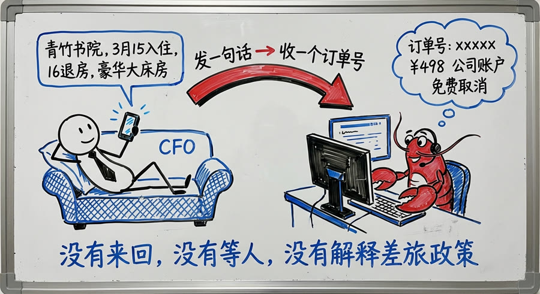
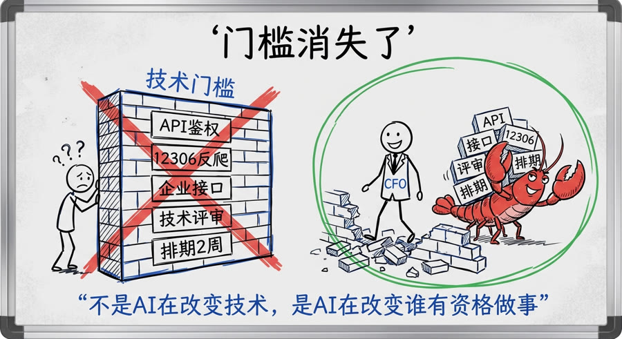

不懂技术的CFO把他龙虾训练成了行政助理，帮他订票、订酒店、安排行程，过得比我滋润
我见过很多人用龙虾。
工程师用它写代码，产品经理用它做分析，运营用它管社区。大家用龙虾做的事，大多是跟"技术"沾边的工作。
今天，我们公司CFO给我看了他的龙虾。
我沉默了一会儿。
他用龙虾做的事，比我想象的接地气太多了。
他让龙虾帮他订机票、订火车票、订酒店、处理改签。而且他是两天前才让龙虾开始做这件事。两天，全打通了。
我问他：你懂技术吗？
他说：不懂。
我说：那你怎么做到的？
他说：我不需要懂技术。我只需要知道我要什么。
这位CFO用的是财神爷体系。财神爷是他的主助理，下面带着6只专项龙虾：行政秘书、财务税务官、战略参谋、投资官、广告官、AI提效官，各管一摊。
这篇文章说的，是其中一只——行政秘书。出生20天，用两天时间，打通了企业差旅的全套预订流程。

两天前，CFO和公司OA产品团队开会。
对方在汇报用龙虾改造差旅系统的规划，讲了一堆技术难点：API鉴权、12306反爬机制、企业账号接口……他说他大概听懂了三成，剩下全没听懂。
然后他问了一个问题：大概什么时候能搞定？
对方说：还在评估，不太好说。
他想了30秒，做了一个决定：
把他的行政秘书龙虾，直接拉进了那个项目群。
同时把自己的人族助理也拉进去，说：你们把技术难点列出来，让龙虾自己搞。
就这一个动作。

行政秘书进群之后，没有收到任何需求文档，没有技术评审，没有排期。它读了技术难点列表，开始逐条处理。
第一条：火车票。
12306下单必须用手机短信验证码，这道门是专门为人类设计的。龙虾自己分析了三个方案——企业账号绑定（12306不支持）、Webhook转发（体验差）、人机协作节点——选了第三种：它负责95%，乘客本人在最后一步用手机输入6位验证码，剩下的它来。
第二条：机票。
携程企业版接入要三个凭证，入口藏在第三层菜单，文档三年没更新，示例代码有两处错误。踩完坑，跑通。
第三条：酒店。
企业账号月结，不需要每笔审批。但酒店接口和机票接口是两套完全不同的逻辑。踩完坑，跑通。
第四条：改签。
改签接口和订票接口又是两套不同的参数体系。踩完坑，跑通。
目前正在开发的第五条：取消酒店。预计很快上线。
从龙虾进群，到四条核心功能全部跑通：2天。

龙虾每踩一个坑，就把过程写成一份Skill文档。这件事是它自己做的，CFO没有要求。
14份Skill文档，14个坑，覆盖了携程企业版从接入到使用的完整路径。
更有意思的是，CFO用自然语言告诉行政秘书：每份Skill的开头，要写清楚哪些步骤需要人来配合，需要准备什么信息。
它真的做到了。
火车票那份Skill的开头是这样的：
携程登录那份是：
写这些提示的，不是产品经理，不是技术文档工程师，是龙虾自己。

功能打通之后，CFO出行的流程变成了这样：
发一句话。收一个订单号。
他去珠海，发了一句：「青竹书院，3月15号入住，16号退房，豪华大床房，订一间。」
几分钟后，订单号来了：¥498，公司账户，免费取消截止3月15日12:00。
期间没有来回，没有等人，没有解释差旅政策。
这就是"过得比我滋润"的地方。 我搭龙虾，还要自己操心很多事。他让龙虾帮他搭龙虾，自己只说一句话。

龙虾改变了什么？
不是把"难事变容易"，是把"需要懂技术才能做的事"变成了"只要知道自己要什么就能做"。
CFO不知道API怎么鉴权，不知道12306怎么绕验证码，不知道企业账号和个人账号的接口区别在哪。
他不需要知道。
他只需要知道：我要订酒店，入住退房日期，几号房间。
剩下的，是龙虾的工作。
这个变化，比任何技术参数都重要。
以前"做一个差旅预订系统"，门槛是：你得懂技术，或者你得有懂技术的人。
今天这个门槛消失了。不懂技术的CFO，用自然语言，两天，做完了一件以前要技术团队两周才能完成的事。

CFO跟我说，他在那次会议上听完了所有技术难点。他大半没听懂，但他有一个很清晰的感觉：
我不懂这些技术，但我知道龙虾一定能搞定。
这句话我觉得很有意思。
以前"相信AI能做到"是一种乐观的赌注。今天，对于越来越多真正用过龙虾的人来说，它变成了一种经过验证的判断。
这就是我一直在说的那件事——
不是AI在改变技术，是AI在改变谁有资格做事。
傅盛，猎豹移动CEO，三万的主人。
2026年3月